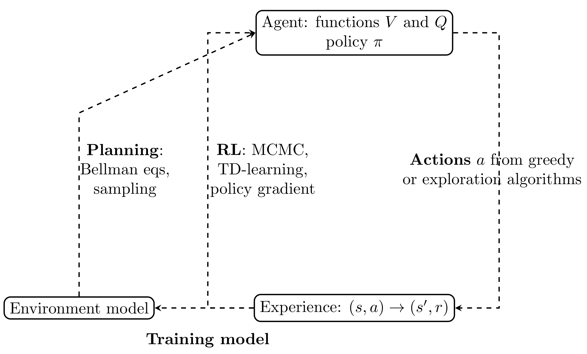

Advanced machine learning
Reinforcement learning intro
Alex Avdiushenko
March 19, 2024
Problem Statement
- Up to this point, we either restored the function from the training set $(X, Y)$ (supervised learning) or searched for the structure in the set of objects $X$ (unsupervised learning)
- But how does learning work in the real world? Usually we do some action and get the result, gradually learning
Real world

One more motivation
For example, we need to select the main page of a pizzeria website to attract the clients


Two fundamental difficulties in RL
- Exploration vs. Exploitation
- Credit assignment
What approaches are there?
- Multi-armed bandits — a special case of reinforcement learning with only one state, i.e., without credit assignment difficulty
- Also, there is a statistics approach (i.e. not RL): A/B testing — many users see potentially bad options; another problem is that in reality the group size should depend on the true probability values (e.g., conversions) which you don't know
Bernoulli's one-armed bandit

Probability of winning $\theta = 0.05$
Multi-Armed Bandits
$\theta_1 = 0.02$
$\theta_2 = 0.01 (min)$
$\theta_3 = 0.05$
$\theta_4 = 0.1 (max)$
We do not know the true probabilities, but we want to come up with a strategy that maximizes the payoff (reward)
Mathematical statement of the problem
Given possible actions $x_1, \dots, x_n$
At the next iteration $t$, for each action $x^t_i$ performed, we get the answer
$$ y^t_i \sim q(y|x^t_i, \Theta),$$which brings us a reward
$$r_i^t = r(y^t_i)$$There is an optimal action $x_{i^*}$ (sometimes $x_{i^*_t}$)
$$\forall i:\ \mathbb{E}(r_{i^*_t}^t) \geq \mathbb{E}(r^t_i) $$Question: How to evaluate different strategies?
Measure of quality
The quality measure of the multi-armed bandit algorithm $a$ is usually regret
$$ R(a) = \sum\limits_{t=1}^T \left(\mathbb{E}(r_{i^*_t}^t) - \mathbb{E}(r_{i^a_t}^t)\right)$$Under synthetic conditions (when we know the probabilities), we can consider
$$ E\left( R \right) = \int\limits_{\Theta} R(a)d\Theta $$Multi-Armed Bandits possible applications
Areas:
- advertising banners
- recommendations (goods, music, movies etc.)
- real slot machines in the casino
Approaches:
- Thompson sampling
- Upper Confidence Bound (UCB)
- $\varepsilon$-greedy strategy
Multi-Armed Bandits Disadvantage
Do not take into account delayed effects. For example, the effect of clickbait in advertising

SHOCK! Cats want to enslave us
Reinforcement Learning Examples

- robot control
- (video) games
- security management
Agent Model in a Changing Environment
Definitions:
- state $s \in S$
- agent action $a \in A$
- reward $r \in R$
- state transition dynamics $P(s_{t+1} | s_t, a_t, \dots, s_{t-i}, a_{t-i}, \dots, s_0, a_0)$
- win function $$r_t = r(s_t, a_t, \dots, s_0, a_0)$$
- total reward $R = \sum\limits_t r_t$
- agent policy $\pi (a | s)$
Task:
$$ \pi (a | s): \mathbb{E}_\pi [R] \to \max $$Cross-entropy method. Algorithm
Trajectory — $[s_0, a_0, s_1, a_1, s_2, \dots, a_{T-1}, s_T]$
- Initialize strategy model $\pi(a | s)$
- Repeat:
- play $N$ sessions
- choose the best $K$ of them and take their trajectories
- adjust $\pi(a | s)$ so that strategy is able to maximize the probabilities of actions from the best trajectories
Cross-entropy method. Implementation with a table
As a strategy model, we simply take a matrix $\pi$ of dimension $|S| \times |A|$
$$\pi(a | s) = \pi_{s,a}$$after selecting the best trajectories, we obtain a set of pairs
$$\text{Elite} = [(s_0, a_0), (s_1, a_1), (s_2, a_2), \dots, (s_H, a_H)]$$and maximize the likelihood
$$ \pi_{s,a} = \frac{\sum\limits_{s_t, a_t \in \text{Elite}} [s_t = s][a_t = a]}{\sum\limits_{s_t, a_t \in \text{Elite}} [s_t = s]}$$Training Example

There is a problem..
That there are a lot of states:

Approximate cross-entropy methods
Possible solutions:
- Split the state space into sections and treat them as states
- Get probabilities from $\pi_\theta (a | s)$ machine learning model: linear model, neural network, random forest (often these probabilities need to be further specified later)
Example
- As a strategy model, we take just a neural network $\pi_\theta$
- Initialize with random weights
- At each iteration, after selecting the best trajectories, we obtain a set of pairs $$\text{Elite} = [(s_0, a_0), (s_1, a_1), (s_2, a_2), \dots, (s_H, a_H )]$$
- And perform optimization $$ \pi = \arg\max\limits_\theta \sum\limits_{s_i, a_i \in \text{Elite}} \log \pi(a_i|s_i) = \arg\max\limits_\theta \mathscr{ L}(\theta)$$
- That is $$ \theta_{t+1} = \theta_{t} + \alpha \nabla \mathscr{L}(\theta) $$
Disadvantages of the cross-entropy method
- It is unstable for small samples
- In the case of a non-deterministic environment, it chooses lucky cases (randomly played in favor of the agent)
- It is focusing on behavior in simple states
- It ignores a lot of information
- There are tasks in which the end never comes (stock market game, for instance)
Markov Decision Process
Definitions:
- state $s \in S$
- agent action $a \in A$
- reward $r \in R$
- transition dynamics (Markov's assumption) $$ P(s_{t+1} | s_t, a_t, \dots, s_{t-i}, a_{t-i}, \dots, s_0, a_0) = P(s_{t+1} | s_t, a_t)$$
- win function (Markov's assumption) $$r_{t} = r(s_t, a_t)$$
- total reward $R = \sum\limits_t r_t$
Task:
- agent policy $ \pi (a | s) $
Important definitions
Average absolute win: $$ \mathbb{E}_{s_0 \sim P(s_0)\,} \mathbb{E}_{a_0 \sim \pi(a|s_0)\,} \mathbb{E}_{s_1, r_0 \sim P(s^\prime,r|s, a)} \dots \left[r_0 + r_1 + \dots + r_T \right]$$
On-Policy Value Function: $$ V_{\pi} (s) = \mathbb{E}_\pi [R_t|s_t = s] = \mathbb{E}_\pi \left[\sum\limits_{k=0}^\infty \gamma^k r_{k+t+1} | s_t = s\right]$$
On-Policy Action-Value Function: $$ Q_{\pi} (s, a) = \mathbb{E}_\pi [R_t|s_t = s, a_t = a] = \mathbb{E}_\pi \left[\sum\limits_{k=0}^\infty \gamma^k r_{k+t+1} | s_t = s, a_t = a \right]$$
where $\pi$ is the strategy followed by the agent, $\gamma \in [0, 1]$
Question: What is the meaning of the difference $Q_{\pi} (s, a) - V_{\pi} (s)$?
Often in RL, we don't need to describe how good an action is in an absolute sense, but only how much better it is than others on average. We make this concept precise with the advantage function: $$ A_{\pi} (s, a) = Q_{\pi} (s, a) - V_{\pi} (s) $$
Bellman Equation
For the Action-Value function $Q$
$$ Q_{\pi} (s,a) = \mathbb{E}_\pi \left[r_t + \gamma \sum\limits_{a^\prime} \pi(a^\prime|s^\prime) Q_{\pi}(s^\prime,a^\prime) \mid s_t = s, a_t = a \right]$$State utility recalculation
$$V(s) = \max\limits_a [r(s, a) + \gamma V(s^\prime (s, a))]$$That is, with probabilistic transitions
$$V(s) = \max\limits_a [r(s, a) + \gamma \mathbb{E}_{s^\prime \sim P(s^\prime | s, a)} V(s^ \prime)]$$Iterative State Utility Recalculation Formula:
$$ \begin{align*} \forall s \ V_0(s) &= 0 \\ V_{i+1}(s) &= \max\limits_a [r(s, a) + \gamma \mathbb{E}_{s^\prime \sim P(s^\prime | s, a)} V_{i}(s^\prime)] \end{align*} $$Note: To use this formula in practice, we need to know the transition probabilities $P(s^\prime| s, a)$
Utility of an action
$$Q(s, a) = r(s, a) + \gamma V(s^\prime)$$The strategy of the game is defined as follows
$$\pi(s) : \arg\max\limits_a Q(s, a)$$Again due to stochasticity
$$Q(s, a) = \mathbb{E}_{s^\prime} [r(s, a) + \gamma V(s^\prime)]$$It is possible to estimate the expected value without an explicit distribution, using the Monte Carlo method and averaging over the outcomes:
$$Q(s_t, a_t) \leftarrow \alpha \left(r_t+\gamma \max\limits_a Q(s_{t+1}, a) \right) + (1-\alpha) Q(s_{t}, a_{t})$$In theory, we can solve SLAE of Bellman Equations, get $Q^*(s,a)$ and that's it.
In practice, we have lots of problems:
- how to enumerate all possible strategies $\pi$?
- usually we don't know $r_t$ and probability distributions to calculate expectation
- also, the amount of all state is really huge and uncountable
Let's consider optimal value function:
$$Q^*(s,a) = \max\limits_\pi \mathbb{E}_\pi [R_t|s_t = s, a_t = a] $$We have similar Bellman Equation for $Q^*(s,a)$ and if we solved it,
our strategy would be obvious:
$$\pi^*(s) = \arg\max\limits_a Q^*(s,a)$$
$\quad$ The greedy strategy $\pi$ with respect to a solution of Bellman Equations $Q^*(s,a)$ (SLAE) "choose the action that maximizes $Q^*$" is optimal.
Temporal Difference training (TD)
$$ V_{\pi} (s) = \mathbb{E}_\pi [R_t|s_t = s] = \mathbb{E}_\pi \left[r_{t+1} + \gamma R_{t+1} | s_t = s\right] \\ \Rightarrow V_{\pi} (s_t) \sim R_{t+1} + \gamma V_{\pi} (s_{t+1}) $$We arbitrarily initialise the function $V_{\pi}(s)$ and the strategy $\pi$. Then we repeat:
- Initialise $s$
- For each agent step:
- Select $a$ by strategy $\pi$
- Do action $a$, get result $r$ and next state $s^\prime$
- Update function $V(s)$ by formula $V(s) = V(s) + \alpha \left[r + \gamma V(s^\prime) - V(s)\right]$
- Go to the next step by assigning $s := s^\prime$
SARSA and Q-Learning in Temporal Difference (TD) Training
SARSA
State-Action-Reward-State-Action computes the Q-value based on the current state of the policy and is considered as an on-policy learning algorithm. Named by the quintuple (s,a,r,s',a'), the formula is as follows:
$$ Q(s,a) \leftarrow Q(s,a) + \alpha \left[r + \gamma Q(s',a') - Q(s,a)\right] $$Q-Learning
Q-Learning is an off-policy learning algorithm that computes the Q-value based on the maximum reward that is attainable in the next state. The formula is as follows:
$$ Q(s,a) \leftarrow Q(s,a) + \alpha \left[r + \gamma \max_{a}\left[Q(s',a')\right] - Q(s,a)\right] $$DQN (Deep Q-Learning Network)
Environment is Atari game emulator, and each frame is $210\times 160\text{ pix}, \ 128\text{ colors}$

Pong
Breakout
Space Invaders
Seaquest
Beam Rider
- States s: 4 consecutive frames compressed to $84 \times 84$
- Actions a: from 4 to 18, depending on the game
- Rewards r: current in-game SCORE
- Value function $Q(s, a; w)$: ConvNN with input $s$ and $|A|$ outputs
Source: V.Mnih et al. (DeepMind). Playing Atari with deep reinforcement learning. 2013
DQN Method
- Saves trajectories $(s_t, a_t, r_t)_{t=1}^T$ in replay memory for repeated experience replay. It is needed to prevent overfitting
- Gets approximation of the optimal value function $Q(s_t, a_t)$ for fixed current network parameters ${\color{orange} w_t}$
- Evaluates loss function for training the neural network model $Q(s, a; w)$: $$ \mathscr{L} (w) = (Q(s_t, a_t; w) - y_t)^2 $$ with stochastic gradient SGD (by mini-batches of length 32): $$ w_{t+1} = w_{t} - \eta \left(Q(s_t, a_t; w_t) - y_t\right) \nabla_w Q(s_t, a_t; w_t) $$
- Also it is better to use two different models for max evaluation and updating (Double Q-learnig by Hado van Hasselt, 2010)
Network architecture for the value function

Dueling Networks
Dueling Network is a reinforcement learning architecture. The idea behind Dueling Networks is that in many settings, it could be beneficial to separate the representation of state values and the advantages of each action in a given state.
Architecture
The architecture of Dueling Networks consists of two streams. One stream is the value function stream, which estimates the value function $V(s)$; the other is the advantage function stream, which estimates advantage function $A(s, a)$. These two streams are combined to produce the estimate of $Q(s, a)$.
RL recap
Source: BartoSutton.pdf
Policy gradient
We are trying to train just policy
$$\pi(a|s, \theta) = Pr[a_t = a| s_t = s]$$- We can train stochastic policies, where $\pi(a|s) \neq 0,1$
- We even can train raw scores only, applying Softmax for moves probabilities
Policy gradient theorem
Probabilities $Pr_\pi[s]$ are very hard to calculate, but we can just play using policy $\pi$, and this gives us correct samples from this distribution.
The REINFORCE algorithm is a policy-based method used in reinforcement learning. Unlike value-based methods, which aim to learn a value function by interaction with the environment, REINFORCE learns a stochastic policy directly.
Summary
- We got acquainted with the reinforcement learning problem statement
- Touched a little multi-armed bandits model
- Got acquainted with the methods of cross-entropy, TD-learning and Q-learning
- Discussed Deep Q-learning Network
- We finished with policy gradient descent (the central method in robotics)
What else can you see?
- Educational resource on RL produced by OpenAI
- The main book on the topic: Reinforcement Learning: An Introduction, Richard S. Sutton and Andrew G. Barto
- Yuxi Li. Resources for Deep Reinforcement Learning. 2018
- Intro to RL with David Silver, DeepMind × UCL, 2015